| NWChem Home | Security & Privacy | PNNL |
NWChem Benchmarks
Molecular Dynamics Benchmarks
Liquid water
The following wall clock times and scaling characteristics have been obtained for molecular dynamics simulations of liquid water of four different system sizes, 5184, 17496, 41472 and 82000 atoms respectively. The simulations used the SPC/E water model and a simple cutoff radius of 1.8 nm, and were run on the IBM SP2. Timings and scaling illustrate the need for sufficient computational load to obtain scalability. From these benchmark results, good scaling with the number of processors is obtained when each processor has at least in the order of 100 atoms.
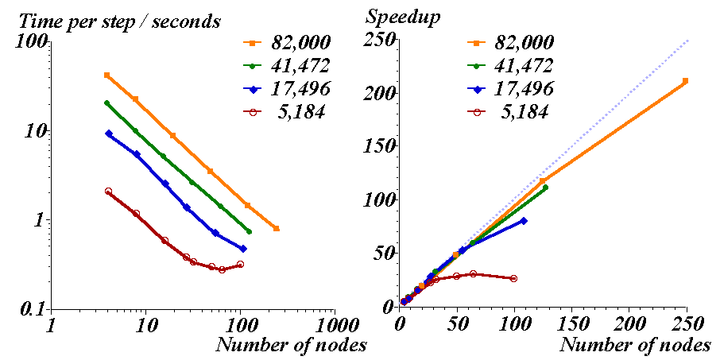
Relative free energy of Na and K complex with 18-Crown-6
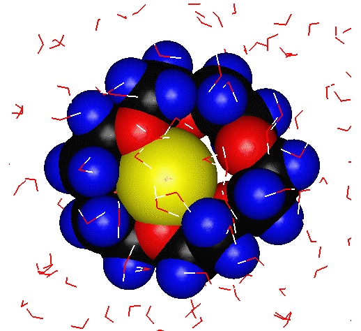>
Free energy data and wall clock times to obtain them on the IBM SP2 and CRAY T3E-900 are given for the free energy difference calculation of Na and K in aqueous solution and in the complex with the 18-crown-6 crownether molecule in aqueous solution. The system has 6382 atoms. The calculated free energy difference of complexation is 6±4 kJ/mol from the multiconfiguration thermodynamic integration (MCTI) approach and 5±5 kJ/mol. The experimental result is 7 kJ/mol.
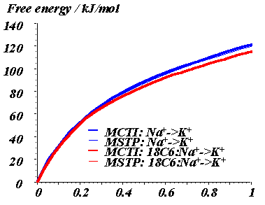 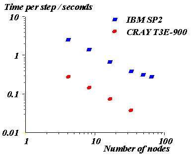
Haloalkanedehalogenase
Wall clock time and speedup as a function of the number of processors used on the IBM SP are given for a simulation of haloalkane dehalogenase in aqueous solution. The system has 41,259 atoms and was simulated using the AMBER force field and SPC/E water model, a cutoff of 1.0 nm and included long range electrostatic energy and force corrections using the particle-mesh Ewald method on 64³ grid. To run this job, download the files had_md.nw, had.top.gz, and had_md.rst.gz.
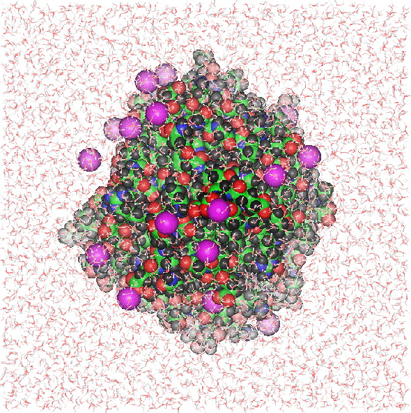 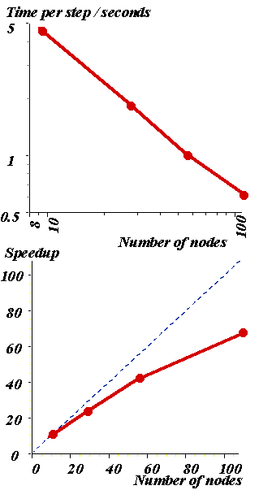
1,2-Dichloroethane
Wall clock time and speedup as a function of the number of processors used on the IBM SP and Cray T3E-900 are given for a simulation of a droplet of 1,2-dichloroethane in aqueous solution. The system has 100,369 atoms and was simulated using the force field parameters for chlorinated alkanes as developed by Paulsen and the SPC/E water model, and a simple cutoff of 2.4 nm. 1,2-Dichloroethane is one of the main pollutants on DOE and other sites.
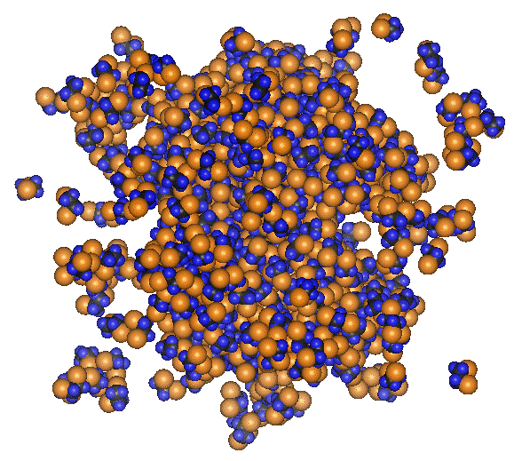 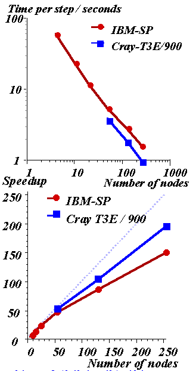
Liquid octanol
Wall clock time and speedup as a function of the number of processors used on the Cray T3E-900 are given for a simulation of liquid octanol. The system has 216,000 atoms and was simulated using AMBER force field parameters and the SPC/E water model, and a simple cutoff of 2.4 nm.
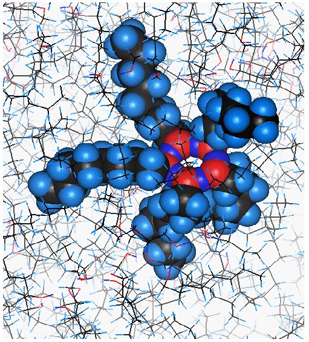 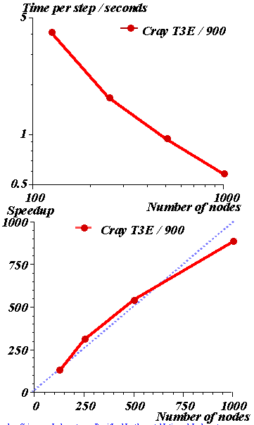
SCF Benchmark
Wall clock and CPU speedup as a function of the number of processors used on an IBM SP with 150 MHz nodes. The total disk space used is also plotted. This is a semi-direct distributed data calculation and so more disk space is used as it becomes available.
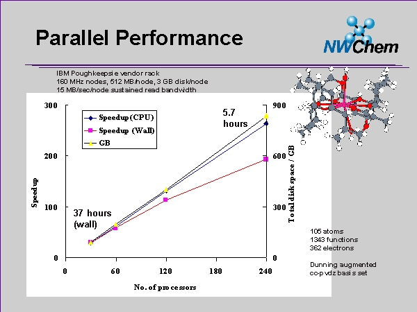
DFT Benchmarks
Wall clock speedups as a function of the number of processors used on various platforms for LDA calculations of three zeolite fragments (347, 1687 and 3554 basis functions). If you would like to run the benchmark yourself, please download the files siosi3.nw, siosi6.nw and siosi7.nw.
Please note: The calculations must be completly in-core; to check this, you need to search for the string in-core and get this kind of output
grep in-core siosi3.out
The percent of 3c 2e- integrals held in-core is: 100.00
Acknowledgments
SIOSI3 (Si8O7H18)
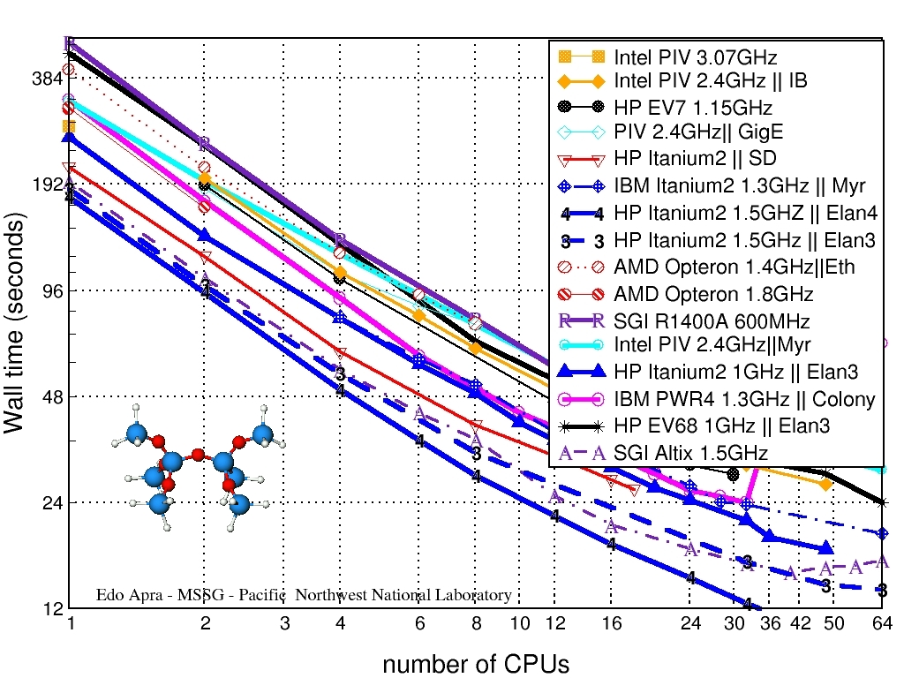SIOSI6 (Si28O67H30)
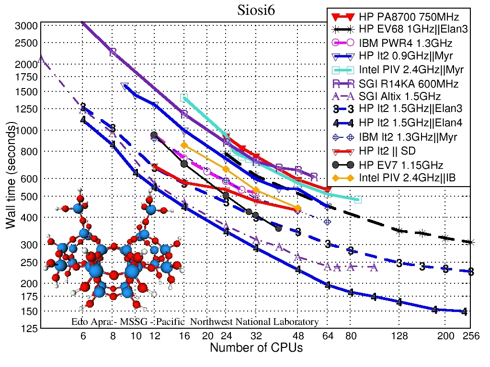SIOSI7 (Si75O148H66)

MP2 Gradient Benchmark
CPU times for an MP2 gradient calculation as a function of the number of processors used for the (H2O)7 molecule. If you would like to run the benchmark yourself, please download the file h2o7.nw
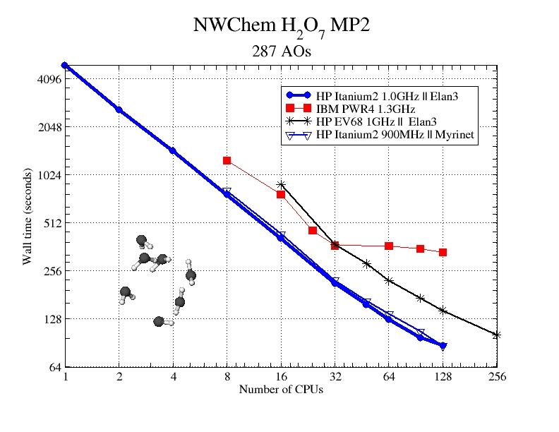
CPU times for different portions of an MP2 gradient as a function of the number of processors used on an IBM SP with 120 MHz nodes for a potassium crown ether.
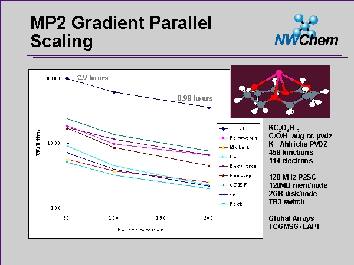
Contact: NWChem Support
Updated: February 22, 2005